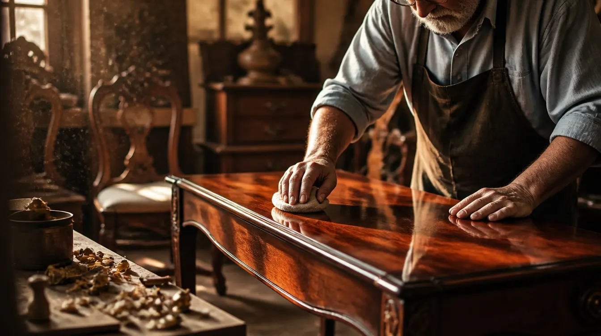

The Workshop Journal · French polish, explained
Shellac, a cloth pad, and a hundred patient passes.
French polishing is the finish of the great 18th- and 19th-century cabinetmakers — and it is still done the same way, by hand and by feel, at our bench in Sterling, Virginia. Here is what the technique actually is, which pieces in the Washington DC area call for it, and — just as honestly — which ones don’t.
What French polish is
Not a thing you buy — a thing you do.
French polish is a technique, not a product: shellac dissolved in alcohol, applied by hand in many thin passes with a cloth pad — the polisher’s fad — slowly building a deep, glass-clear surface.*
Each pass leaves almost nothing behind — a whisper of shellac, thinner than any brushed or sprayed coat could ever be. That is the entire secret. Because the finish is built from so many nearly invisible layers, light travels down into it and back out again, and the grain beneath seems to sit in glass rather than under plastic.
It cannot be sprayed, rushed or faked. There is no machine for it and no shortcut through it — which is exactly why it fell out of fashion in the age of the spray booth, and exactly why it still belongs on the finest antiques.

* Shellac itself is a natural resin, dissolved in spirits to make the polish. The “French” in the name honors the polishers who perfected the padding technique in the early nineteenth century — the material is older still.
How the surface is built
Four movements, played slowly.
-
Charging the pad
The fad is a wad of soft cloth wrapped in a fine outer skin of cotton or linen, charged with shellac dissolved in alcohol. The polisher meters the flow by touch — enough to deposit, never enough to flood.
-
Bodying up
Pass after pass — circles, figures-of-eight, then straight strokes with the grain — each one leaving its whisper of shellac. Slowly, over many sessions, the body of the finish rises out of the wood.
-
Spiriting off
The final passes are made with the pad nearly dry, clearing away every trace of the work and burnishing the surface to its full, glass-clear depth. This is where the shine you associate with fine antiques is actually made.
-
Letting it rest
Between sessions, the finish rests and hardens. The alcohol must leave; the shellac must settle. A French polish is measured in days, not hours — the one step no client has ever talked us out of.
Why it earns its place
Three reasons it belongs on the finest pieces.
Depth. Built from countless near-invisible layers, a French polish lets the eye fall through the finish and into the wood — flame mahogany, walnut and satinwood look the way their makers meant them to look.
Repairability. Fresh shellac dissolves into old shellac. A worn or damaged French polish can often be revived by working new polish into the original surface — no stripping, no loss of the old finish. Few modern coatings forgive like that, and on an antique, forgiveness matters.
Period-correct. If your piece left its maker’s shop in the 18th or 19th century, there is a good chance it wore shellac. Restoring it with the same material and the same technique preserves not just the look but the honesty of the piece — and with it, the worth of the antique underneath.

The other side of the ledger
Where we’ll talk you out of it.
A beautiful finish with real sensitivities
The same chemistry that makes French polish repairable makes it vulnerable. Shellac is dissolved by alcohol — so a spilled cocktail, a splash of perfume or nail polish can mark it quickly. Heat can blush it white; a hot dish set straight on the surface is a genuine risk. And liquids left standing will find their way into any finish, this one sooner than most.
None of this is a flaw in the technique. It is simply what shellac is — and it is why the finish survives best on pieces that are handled with a little ceremony.
The hard-working table deserves lacquer
For a kitchen table, an everyday dining table, a dresser that earns its keep — we will honestly recommend a high-quality non-yellowing lacquer instead, built up in coats until the piece has the protection it needs. It is the right tool for that life, and we would rather steer you to it than sell you a finish you’ll fight.
French polish is for the secretary, the sideboard, the writing desk, the piece that presides rather than serves. Matching the finish to the life of the piece is most of the craft of choosing one.
How we decide
Three finishes, one honest question.
Hand-rubbed oil. Worked into the wood rather than laid over it — low sheen, close to the grain, warm to the touch. For pieces that should feel like wood first and furniture second.
For the piece you touch
Non-yellowing lacquer. For the hard-working pieces — dining tables, dressers, kitchen cabinets. Three coats saw the Federal Style Collection’s fragile heirlooms safely into the next generation.
For the piece that works
Traditional French polish. The one that earns its place on the finest antiques — deep, clear and luminous in a way no sprayed coating can imitate.
For the piece that presides
* Whichever finish is right for your piece, the stain is still chosen on the actual wood, in the shop — never from a sample card. The full story of how a piece is stripped, repaired and refinished is on our refinishing & restoration page.
After the polish comes home
Care for it like it’s 1820.
A French polish asks little — but it asks it firmly. A few habits will keep the surface deep and clear for decades.
- Coasters and pads, always. Under every glass, vase and warm dish. Alcohol and heat are this finish’s two real enemies.
- Blot spills at once — a blotting action, never a wipe. Anything with alcohol in it, from wine to perfume, works fastest; you are working against the clock.
- Dust with a barely damp cotton cloth, with the grain. No silicone aerosol polishes — ever. They build a slick, blotchy tension no finish deserves.
- Keep the climate steady. Drastic swings in temperature or humidity damage wood quickly, and the finish with it.
- Once or twice a year, a quality cream polish lifts the buildup of regular use and brings back the luster.
The full regimen — products we actually use, and what to do about white rings — is in our fine furniture care guide.

Frequently asked
What clients ask about French polish.
Is French polish durable enough for a kitchen or everyday dining table?
Honestly — usually not. Shellac is sensitive to alcohol, to heat and to standing liquids, so a table that works hard every day is better served by a high-quality non-yellowing lacquer, built up in coats until the piece has the protection it needs. French polish earns its place on fine antiques and pieces that live gentler lives, where nothing else matches its depth. We will tell you plainly which finish your piece calls for.
Can a French-polished surface be repaired without refinishing the whole piece?
Often, yes — and this is one of the technique’s great virtues. Because fresh shellac dissolves into old shellac, a skilled polisher can frequently work new polish into a worn or damaged area so it becomes part of the original surface, rather than stripping the piece to bare wood. Send us photos and we will tell you honestly whether your finish can be revived or needs the full bench.
Do you offer French polishing in the Washington DC area?
Yes. French polishing has been part of our workshop’s craft since 1991. We serve Washington DC, Maryland and Virginia from our shop in Sterling, Virginia, with pick-up and delivery, quoted with your estimate throughout the area. Estimates are free — call 703-437-7446 or email a few photos to estimates@refinishing.org.
Some finishes deserve a hundred passes.
If a piece of yours might be one of them — or if you’re simply not sure which finish it calls for — send a few photos and we’ll give you an honest answer, free.